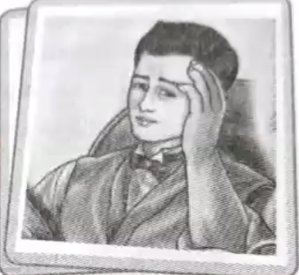
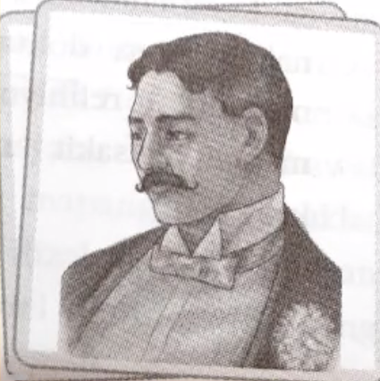
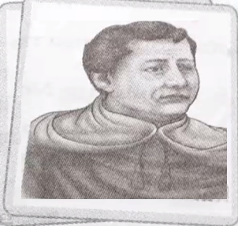
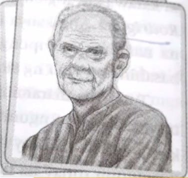
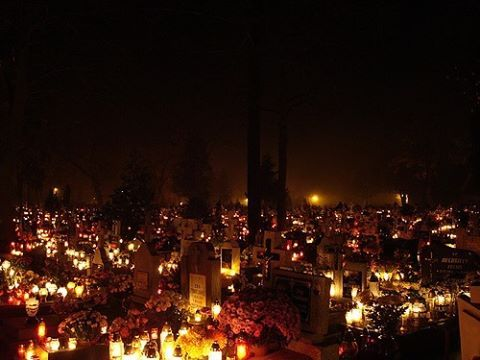

Don Crisostomo Ibarra
Siya ang anak ni Don Rafael Ibarra. Nag-aral siya sa Europa nang pitong taon at bumalik sa Pilipinas matapos mamatay ang ama at upang ipagpatuloy ang plano nitong magpatayo ng paaralan para sa kabataan ng San Diego.

Buod at Repleksyon
Itinaon ni Crisostomo ang pagpunta niya sa sementeryo sa Araw ng mga Patay. Sa sementeryo ng San Diego, sa dakong kanluran, sa kalagitnaan ng palayan na makipot, maalikabok sa tag-araw at napakaputik naman sa tag-ulan ay may kapansin-pansin ang isang malaking krus sa gitna ng sementeryo. Maraming tao at mayroon ding mga puntod na hindi naaalagaan at may mga kalansay na pakalat-kalat na lamang. May dalawang sepulturero ang nag kukwentuhan. Sila ang tagapangalaga ng mga puntod sa libingan. Sila rin ang humuhukay at naglilibing ng mga patay. Ang isang sepulturero ay baguhan kaya naman siya ay balisa, pawis na pawis, at lura nang lura habang naninigarilyo. Ang datihang sepulturero ay sanay na sa paghuhukay kahit pa basa, madilim, at sariwang bangkay. Na ikwento ng datihang sepulturero na siya ang naglipat ng bangkay ni Don Rafael Ibarra habang bumubuhos ang malakas na ulan na ipinagutos ng isang kura. Si Padre Damaso ang kura na ito. Si Don Rafael ang kalunos lunos na napatapon sa lawa dahil sa malakas ang buhos ng ulan at kabigatan ng bangkay, minarapat na lamang na itapon ito sa lawa na dapat ay ililipat sa libingan ng mga intsik. Maaaring may galit si Padre Damaso kay Don Rafael kaya nais nitong ipalipat ang bangkay nito sa libingan ng mga intsik. Sa kabilang banda, pumasok si Pilospo Tasyo sa sementeryo. Pinagtatawanan siya ng ilang naroroon. Hinahanap naman ng matanda ang bungo ng kaniyang asawa sa mga sepulturerong nag-uusap, ngunit ininguso lamang sa kaniya ang mga umbok ng lupa. Hindi na nakuhang magalit ng matanda dahil batid niyang mangmang ang mga kausap.
Isang paniniwala at kaugalian na pinagyayaman ng mga Pilipino ang paggalang at pagpapahalaga sa mga yumao. Ginugunita ang araw ng mga patay tuwing Nobyembre uno taon-taon. Sa paggunita ng araw ng mga patay ay karaniwang inaalayan ng mga bulaklak, nagsisindi ng kandila at inaalayan ng dasal. Sa pamamagitan ng paglilibing ng maayos sa sementeryo ay nabibigyang katahimikan ang yumao sa kanilang pagkamatay. Inililibing ang mga yumao sa sementeryo kung saan mayroong mga krus at mga puntod. Noon, mapapansin na mayroong mababang pagtingin ang mga Pilipino sa mga Intsik. Ang mga inililibing sa libingan ng mga Intsik ay pinaniniwalaang hindi napupunta sa langit. Maaring ito ang dahilan ni Padre Damaso kaya ginusto niya na ilipat ang bangkay ni Don Rafael doon.
Noli Me Tangere
Huwag mo akong salinginMahal ko ang aking bayan pagkat utang ko rito at magiging utang pa ang aking kaligayahan.
- Don Crisostomo Ibarra (Kabanata 49)